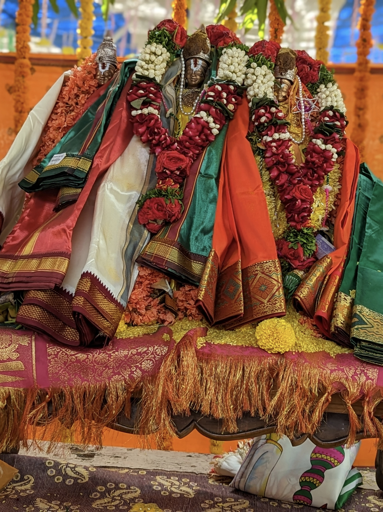
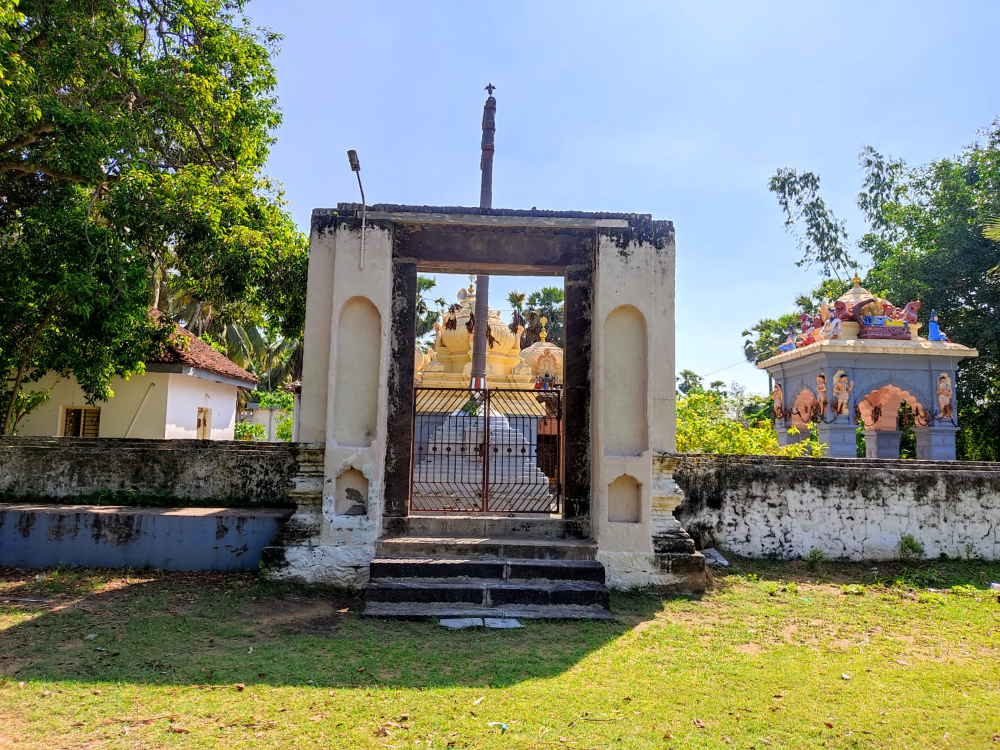
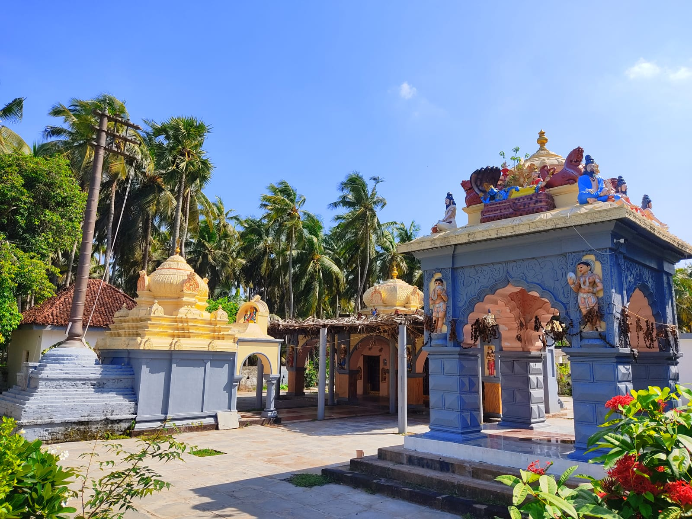
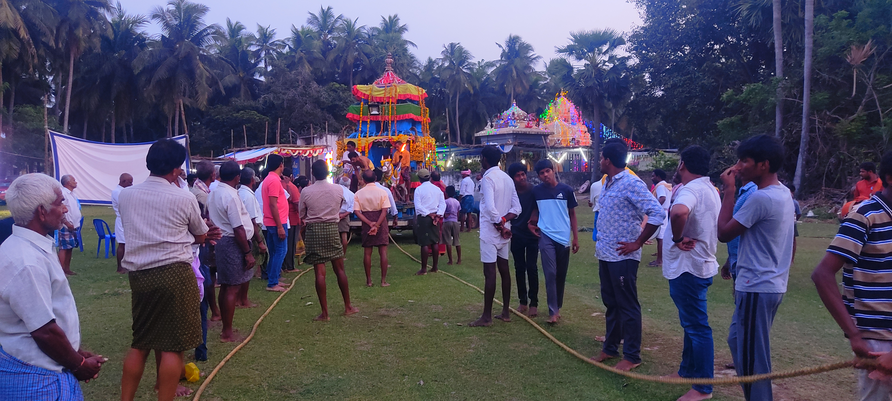
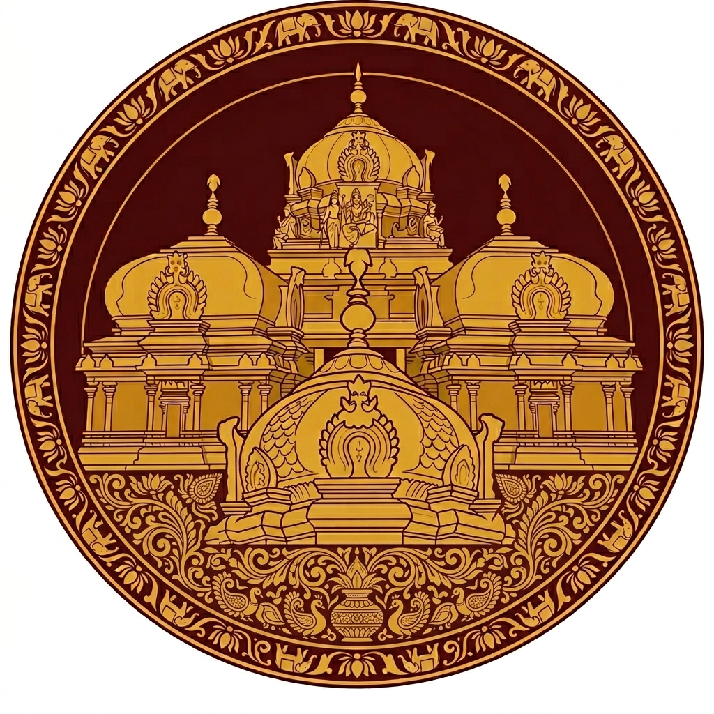

Gallery









శ్రీ రామ జయ రామ జయ జయ రామ

SINCE 19TH CENTURY
ఓం శుక్లాంబరధరం విష్ణుం శశివర్ణం చతుర్భుజమ్ । ప్రసన్నవదనం ధ్యాయేత్ సర్వవిఘ్నోపశాంతయే ॥ 1 ॥ యస్యద్విరదవక్త్రాద్యాః పారిషద్యాః పరః శతమ్ । విఘ్నం నిఘ్నంతి సతతం విష్వక్సేనం తమాశ్రయే ॥ 2 ॥
క్షీరోధన్వత్ప్రదేశే శుచిమణి-విలస-త్సైకతే-మౌక్తికానాం మాలా-కౢప్తాసనస్థః స్ఫటిక-మణినిభై-ర్మౌక్తికై-ర్మండితాంగః । శుభ్రై-రభ్రై-రదభ్రై-రుపరివిరచితై-ర్ముక్త పీయూష వర్షైః ఆనందీ నః పునీయా-దరినలినగదా శంఖపాణి-ర్ముకుందః ॥ 1 ॥
భూః పాదౌ యస్య నాభిర్వియ-దసుర నిలశ్చంద్ర సూర్యౌ చ నేత్రే కర్ణావాశాః శిరోద్యౌర్ముఖమపి దహనో యస్య వాస్తేయమబ్ధిః । అంతఃస్థం యస్య విశ్వం సుర నరఖగగోభోగి గంధర్వదైత్యైః చిత్రం రం రమ్యతే తం త్రిభువన వపుశం విష్ణుమీశం నమామి ॥ 2 ॥
ఓం నమో భగవతే వాసుదేవాయ !
శాంతాకారం భుజగశయనం పద్మనాభం సురేశం విశ్వాధారం గగనసదృశం మేఘవర్ణం శుభాంగమ్ । లక్ష్మీకాంతం కమలనయనం యోగిహృర్ధ్యానగమ్యం వందే విష్ణుం భవభయహరం సర్వలోకైకనాథమ్ ॥ 3 ॥
మేఘశ్యామం పీతకౌశేయవాసం శ్రీవత్సాకం కౌస్తుభోద్భాసితాంగమ్ । పుణ్యోపేతం పుండరీకాయతాక్షం విష్ణుం వందే సర్వలోకైకనాథమ్ ॥ 4 ॥
నమః సమస్త భూతానాం ఆది భూతాయ భూభృతే । అనేకరూప రూపాయ విష్ణవే ప్రభవిష్ణవే ॥ 5॥
సశంఖచక్రం సకిరీటకుండలం సపీతవస్త్రం సరసీరుహేక్షణమ్ । సహార వక్షఃస్థల శోభి కౌస్తుభం నమామి విష్ణుం శిరసా చతుర్భుజమ్ । 6॥
ఛాయాయాం పారిజాతస్య హేమసింహాసనోపరి ఆసీనమంబుదశ్యామమాయతాక్షమలంకృతమ్ ॥ 7 ॥
చంద్రాననం చతుర్బాహుం శ్రీవత్సాంకిత వక్షసం రుక్మిణీ సత్యభామాభ్యాం సహితం కృష్ణమాశ్రయే ॥ 8 ॥
Morning: 7:00 AM - 10:00 AM
Evening: 5:00 PM - 7:00 PM
• No Current Events •
• No upcoming events •





ఈ ఆలయం 19వ శతాబ్దంలో నిర్మించబడింది. ఈ ఆలయ ప్రారంభోత్సవం జరిగి దాదాపు 180 సంవత్సరాలు అయ్యింది. ఈ ఆలయంలో శ్రీ సీతారాముడు మరియు లక్ష్మణుడు కొలువై ఉన్న ఒక ప్రధాన గర్భాలయం ఉంది. ఆ ప్రధాన ఆలయంతో పాటు మూడు ఉపాలయాలు ఉన్నాయి. ఆ ఉపాలయాలలో శ్రీరామునికి ఆగ్నేయ దిశలో రాజ్యలక్ష్మి తాయార్, శ్రీరామునికి ఈశాన్య దిశలో శ్రీ వెంకటేశ్వర స్వామి ఉపాలయం మరియు శ్రీరామునికి సరిగ్గా తూర్పు వైపున దశాంజనేయ ఉపాలయం ఉన్నాయి.
ప్రతి సంవత్సరం శ్రీ రామ నవమిని అత్యంత ఆనందంగా జరుపుకుంటారు. భక్తులకు భారీ స్థాయిలో భోజనాలు ఏర్పాటు చేస్తారు. శ్రీరాముడు మరియు శ్రీ వెంకటేశ్వర స్వామి వారి రాధోత్సవాన్ని అత్యంత భక్తిశ్రద్ధలతో జరుపుకుంటారు.చాలా మంది గ్రామస్తులు వచ్చి ఆలయంలో నిర్వహించే అన్ని కార్యక్రమాలలో పాల్గొంటారు.
Your contribution is helpful for temple
UPI ID: yourupi@bank
Phone: xxxxxxxxxx
Bank Name: ABC BANK
Account Number: 111111111111
IFSC: ABC111111

Scan & Donate
Contact no: abcdefghij
Email: srivaikuntaramalayam@abcdefgh.com
Sri Vaikunta Ramalayam
Janakipuram, Chinagollapalem
Scan QR and join into our Whatsapp community
Recieve Regular updates about Sri Vaikunta Ramalayam events